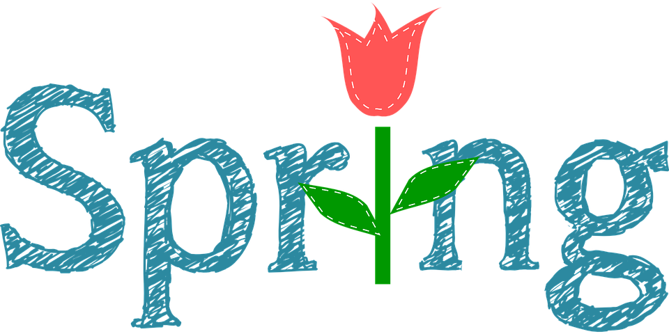

MARCH
What is St. Patrick's Day?
St. Patrick's Day is March's most prominent holiday. It is the holiday that celebrates Saint Patrick, a man who helped Christianity flourish in Ireland. It is celebrated by wearing green and shamrocks are very festive. Shamrocks represent the holy trinity.

Irish Meals:
- Irish brown bread
- Corned beef and cabbage
- Beef and Guinness pie
- Irish cream chocolate mousse cake
- Irish coffee
- Irish potato soup